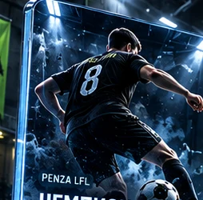
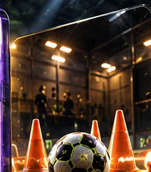
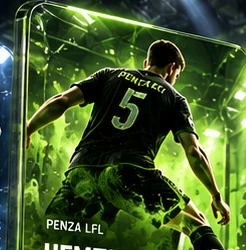
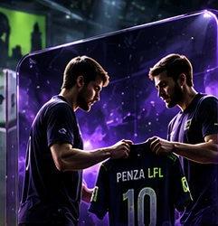
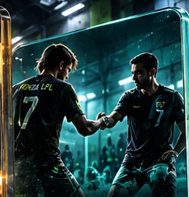

● ПРЯМЫЕ ТРАНСЛЯЦИИСмотреть все →▶● ДЕМОТрансляции PENZA LFLВидеоплеер появится после подключения эфираVK
⌕ ПОСЛЕДНИЕ НОВОСТИВсе новости →Регистрация команд на новый сезонАнонс · Демонстрационный материалЧемпионаты 8×8 и 5×5Разделы лигиТрансферы и заявкиЦифровое управление переходамиТренировки и товарищеские встречиПоиск соперников